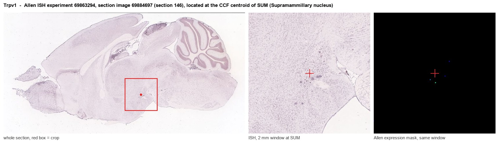
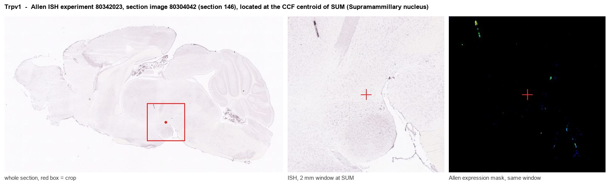
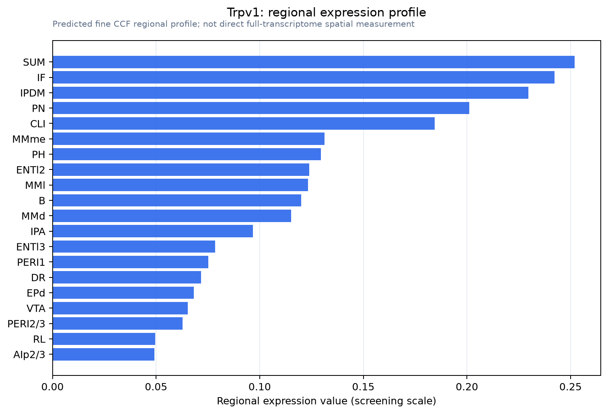

Trpv1
Transient receptor potential cation channel subfamily V member 1 (TrpV1) (Osm-9-like TRP channel 1) (OTRPC1) (Vanilloid receptor 1)
Spatial tier: RESTRICTED · Class: ION_CHANNEL · Top region: SUM (Supramammillary nucleus) · Positive regions: 17/554
Function in SUM: evidence, prediction, innovation
- Gene function
- Trpv1 encodes TRPV1, a heat- and capsaicin-gated non-selective cation channel of the TRP vanilloid family that is also opened by protons, endovanilloids and inflammatory mediators. It is the canonical nociceptor heat sensor in dorsal root and trigeminal neurons, where calcium entry drives depolarisation, neuropeptide release and sensitisation.
- Region function
- The supramammillary nucleus is a small posterior hypothalamic cell group projecting heavily to medial septum, dentate gyrus and CA2; it signals novelty and arousal and sets hippocampal theta rhythm and wakefulness.
- Published in this region
- inferred No region-specific literature found, and the negative evidence matters: Cavanaugh 2011 built Trpv1 reporter mice and showed that brain Trpv1 expression is far more restricted than earlier antibody and PCR studies had claimed, being confined to a few nuclei and to arteriolar smooth muscle, with no functional TRPV1 across most of the forebrain. The nearest positive finding is a TRPV1-like conductance recorded in adjacent midline thalamic neurons (Hermes 2013); the supramammillary nucleus itself is established as a novelty and arousal node (Chen 2020; Pedersen 2017).
- Predicted function
- Prediction: the most testable version is that a small number of supramammillary glutamatergic neurons, or the arterioles supplying them, express TRPV1 and make this arousal node sensitive to brain temperature and endovanilloids. If so, local capsaicin should increase supramammillary firing and produce cortical arousal and hippocampal theta, and resiniferatoxin ablation or Trpv1 deletion should blunt hyperthermia-evoked wakefulness. Given the reporter-mouse evidence, however, the leading prediction is that careful validation will find vascular rather than neuronal TRPV1 here.
- Innovation
- ★★★☆☆ 3/5 TRPV1 is exhaustively studied but its central expression is contested, so a validated supramammillary population would be notable while remaining a real possibility of artefact.
- Tools
- Trpv1-Cre (JAX 017769), Trpv1 knockout (JAX 003770) and Trpv1-PLAP-nLacZ reporter mice; capsaicin and resiniferatoxin as agonists and ablation tools; antagonists capsazepine, BCTC and AMG-517; anti-TRPV1 antibodies, many poorly validated; Vglut2-IRES-Cre for the supramammillary population.
- References
Direct evidence located at the region

Allen ISH experiment 69863294, section image 69884697 (section 146): the section that contains the CCF centroid of Supramammillary nucleus according to the Allen image-to-atlas alignment (reference_to_image), with a 2 mm window around that point. Left: whole section, red box = window. Middle: ISH signal. Right: Allen's expression-mask view of the same window. open this image in the Allen viewer

Allen ISH experiment 80342023, section image 80304042 (section 146): the section that contains the CCF centroid of Supramammillary nucleus according to the Allen image-to-atlas alignment (reference_to_image), with a 2 mm window around that point. Left: whole section, red box = window. Middle: ISH signal. Right: Allen's expression-mask view of the same window. open this image in the Allen viewer
Direct spatial evidence

Regional expression figure

Predicted WMB × fine-CCF profile; not direct full-transcriptome spatial measurement.
Spatial profile
Evidence and specificity
- Evidence status
- PREDICTED_FINE
- Direct sources
- None; predicted localization only
- Exclusive threshold
- 12 positive regions out of 554
- Spatial specificity
- 0.353
- Top-region fraction
- 0.070
- Filter status
- PASS
Interpretation limits
- Cell-type-to-region projection is imputed expression, not direct spatial measurement.
- Adult reference atlases do not establish stability across age, sex, strain, state, or disease.
- Transcript abundance does not guarantee protein abundance or genetic-tool performance.